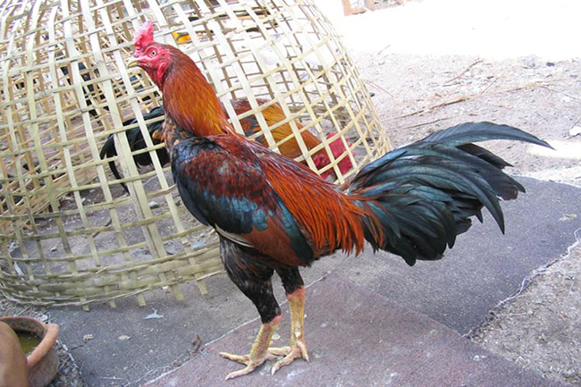

ไก่ชน หมายถึง
ไก่สายพันธุ์พื้นเมือง ซึ่งไก่พื้นเมืองอาจมีการแบ่งเป็นประเภททั่วไปได้ 2 ลักษณะ คือ การเลี้ยงไว้เพื่อประกวดการต่อสู้ และความสวยงาม กับการเลี้ยงไว้เพื่อการฆ่าและบริโภคเนื้อเป็นอาหาร ไก่ชน เป็นสัตว์เลี้ยงที่ผูกพันกับสังคมทุกชนชั้นมาแต่โบราณ ตามประวัติศาสตร์แม้ในราชสำนักในสมัยสุโขทัยก็มีการเลี้ยงไก่ชน[1] ไก่ชนในปัจจุบันนอกจากเลี้ยงไว้ประกวดการต่อสู้แต่ก็ได้ยอมรับเรื่องการฆ่าเป็นอาหารด้วยเมื่อต่อสู้แพ้ และในวิถีชีวิตตามชนบท ไก่ชน ก็หมายถึงแหล่งอาหารของพวกเขาด้วยเช่นกัน ซึ่งเราพบเห็นได้จากการเลี้ยงได้ทั่วไปในวิถีชีวิตประจำวันของสังคมเกษตรกรรม แต่บางแห่งโดยเฉพาะชาวพุทธ เชื่อว่าเกมกีฬาชนไก่ เป็นกีฬาที่ทารุณ เช่นเดียวกับกีฬาชนวัว และการกัดปลา ในกีฬาปลากัด
รูปภาพ